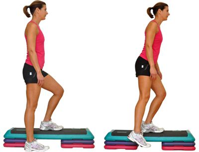

6 Cardio Übungen für zu Hause
- 6 Cardio Übungen für zu Hause - Gymondo
- Ausdauertraining für Zuhause: 20 Übungen ohne Geräte
01.05.2020 — - 20 Cardio übungen-Ideen | fitness workouts, fitnessübungen .
- Für diese 5 Cardio-Übungen brauchst du kein Zubehör
- Cardio Training: Vorteile, Methoden und Herzfrequenz
- Abnehmen: Diese 5 Cardio-Übungen verbrennen noch mehr .
- Probiere die 5 besten Cardio-Übungen im Fitnessstudio aus .
- 10 Übungen für das perfekte Cardio Training zuhause
- Cardio-Training zu Hause - Uebungen.ws
- Besser als Laufen: 5 Cardio-Übungen, um mehr Kalorien zu .

Home Training Ernährung Abnehmen Rezepte Erfolgsgeschichten Gratis Woche starten Home Training Ernährung Abnehmen Rezepte Erfolgsgeschichten Gratis Woche starten Ausdauer Training Übungen
Die 6 besten Cardio Übungen für zu Hause
Julia Schultz 6. April 2016 4 commentsFür Ausdauertraining musst Du nicht bei jedem Wetter joggen gehen. Julia zeigt Dir die besten Cardio Übungen für zu Hause.
Wer denkt seine Ausdauer könne man nur auf dem Laufband oder in der freien Wildbahn trainieren, liegt gewaltig falsch. Man muss nicht immer die eigenen vier Wände verlassen, um sei Herz zum Pumpen zu bringen und so seine Kondition zu steigern. Es gibt einige effektive Übungen, die einer Laufeinheit im Wald schon ziemlich nah kommen. Seine Ausdauer steigert man damit auf alle Fälle und ganz nebenbei gehören sie meistens noch in den Bereich HIIT – wir pushen damit also unsere Fettverbrennung enorm.1. Springseilspringen
Mit einem Springseil kannst Du auch in den eigenen 4 Wänden Deine Ausdauer effektiv trainieren.Der Klassiker unter den Ausdauersportarten, welche man zu Hause machen kann. Das Springseil ist bei Boxern oder Crossfit -Jüngern kaum wegzudenken. Uns sein wir mal ehrlich, die sehen auch immer topfit aus!
Also muss ja was dran sein an dem Rumgehopse. In der Tat ist es super effektiv . In einer halben Stunde (Das muss man allerdings auch erst mal schaffen) kannst Du bis zu 400kcal verbrennen.
Aber 10 Minuten reichen auch schon. Das soll so effektiv sein wie eine halbe Stunde Laufen . Na dann 🙂
2. Hampelmann (Jumping Jacks)
Den Hampelmann kennen wir doch noch aus unserer Kindheit. Hat er nicht unglaublich viel Spaß gemacht? Wer hätte gedacht, dass er es auch auf unserer Liste für die besten Cardio Übungen schafft?
Jumping Jacks eignen sich super für eine kleine Ausdauereinheit im Wohnzimmer . Und das Tolle ist, dass uns die Ausführung auch noch in den Knochen steckt . So etwas verlernt man nicht so leicht.
3. Mountain Climbers
Der neue Liebling der Fitnesstrainer. Er kräftig nicht nur die Bauchmuskeln und ganze Rumpfstabilisation , sondern kann auch unsere Kondition steigern , wenn wir die Mountain Climbers ganz schnell ausführen.
Dazu einfach in die Liegestützposition kommen und dann abwechselnd ein Knie nach dem anderen zur Brust ziehen.
4. Kniehebelauf
Vom Lauftraining ins Wohnzimmer rekrutiert. Der Kniehebelauf bringt das Herz-Kreislaufsystem auf jeden Fall auf Trab. Dafür die Knie abwechselnd auf Hüfthöhe hochziehen. Eine Minute bringt die Beine schon zum Brennen!
Aber bitte immer schön den ganzen Weg gehen und die Knie so hoch wie möglich ziehen . Wir wissen das ist anstrengend, wollen aber dass du maximale Erfolge erzielst!
5. Anfersen
Auch diese Übung stammt aus dem Lauftraining und kann wunderbar im Wohnzimmer durchgeführt werden. Ich finde sie nicht ganz so anstrengend wie den Kniehebelauf.
Trotzdem hat das Anfersen es in sich und pusht deine Ausdauer . Führe die Fersen dynamisch in Richtung Gesäß – so schnell du kannst!
6. Skater
Ab heute können wir auch Inline Skaten zu Hause imitieren und brauchen uns dazu noch nicht mal die Rollen unter die Sohlen zu schnallen. Hierbei springen wir seitlich von einem Bein auf das andere und versuchen dabei, so weit wie möglich zur anderen Seite zu springen.
Landen wir auf dem rechten Bein, beugen wir dieses und strecken das Linke gerade dahinter aus, ohne dass es den Boden berührt. Wir führen das linke Bein zurück und nutzen den Schwung, um uns mit dem rechten (Stand-)Bein abzustoßen und auf dem linken Bein zu landen. Nun beugt sich das linke (Stand-)Bein, und wir strecken das rechte Bein diagonal dahinter aus.
Das waren unsere 6 besten Cardio Übungen für dein Wohnzimmer. Du kannst im Übrigen auch immer auf der Stelle laufen, tippeln oder hopsen und dabei die Geschwindigkeit variieren. Damit hast du stets eine kleine Ausdauereinheit in deinem Workout.
Zu Hause trainieren mit GYMONDO
Wenn du zu Hause deine Ausdauer trainierst, sparst du Zeit & Geld und wirst genauso fit wie im Studio. Ein Trainingsplan und Übungen von GYMONDO helfen Dir, Deine sportlichen Ziele auch in den eigenen 4 Wänden umzusetzen.
(average: 3.75 out of 5)
Loading
Julia Schultz
Julia ist Fitnessexpertin, Yogalehrerin und Bloggerin. Sie versorgt dich mit Tipps und Tricks, mit denen du dich wohler in deiner Haut fühlst und dich selbst etwas glücklicher machst. Schau doch mal auf Julias Blog vorbei!
View all posts Kampf dem Winkfett – die besten Übungen für straffe Arme Keine Zeit für Sport? Dieses 15 Minuten Bodyweight Zirkeltraining macht Dich fit!4 comments
Cancel reply
Benjamin
says: 12. April 2016 at 14:41 Das Springseil verwende ich auf auch oft, meist zum Aufwärmen. Und 10 Minuten Seilspringen sind gefühlt wirklich mindestens genau so anstrengend wie eine halbe Stunde Laufen 🙂
Um meine Ausdauer zu verbessern integriere ich auch noch oft Burpees in mein Training. Super effektiv, beansprucht nahezu jede Muskulatur und perfekt für die Ausdauer.
Viele Grüße,
Benjamin
abnehmen
says: 2. March 2017 at 22:25Ja das ist schon krass hier und da und wenn das hier und da so machnt, dann sit das einfach hääftig.
Reply Kenny says: 13. May 2020 at 18:02Muss man beim seilchenspringen 1 Kontakt haben oder darf man auch zwei am boden
ReplyGymondo Community
says: 28. May 2020 at 10:33Hey Kenny, wenn du zwei Seilkontakte in einem Sprung schaffst, dann kannst du natürlich auch die hardcore-Variante nutzen 🙂
Reply You may also like Motivation Training 6 hilfreiche Motivationstipps zum Dranbleiben
Okay, wir geben’s zu: Selbst mit maximaler Motivation ist es gar nicht so einfach, die eigenen Trainingsziele immer zu erreichen. Gerade bei starren Wochenplänen mit endlosen Sessions an ungeliebten Cardiogeräten und gesunder
Abnehmen Training WorkoutsIn der Kürze liegt die Würze: Die Vor- und Nachteile von Micro-Workouts
Reichen 5-minütige Workouts wirklich aus? Bestimmt ist dir diese Frage auch schon einmal durch den Kopf gegangen. Egal, ob du einen stressigen Tag hattest, dein Terminkalender einfach zu voll ist oder du einfach mal keine Energie
Muskelaufbau Tipps & Tricks Training WorkoutsAktive Regeneration: 5 effektive Methoden für deine trainingsfreien Tage
Du willst deiner Gesundheit und deinem Körper etwas Gutes tun? Lass es an deinen trainingsfreien Tagen ruhig angehen und investiere etwas Zeit in aktives Regenerationstraining. Training an trainingsfreien Tagen klingt für dich
Aktuell
Erfolgsgeschichte: Kajas Weg ins neue Glück
Wir feiern Vielfalt – mach mit! 5 Ideen für den Pride Month
Sommerfit mit Gymondo: Deine 30-tägige Fitness Challenge
Mach’s dir selbst! 7 gesunde Gründe für Masturbation
6 hilfreiche Motivationstipps zum Dranbleiben
Erfolgsgeschichte: Lass dich von Vanessas Verwandlung inspirieren
In der Kürze liegt die Würze: Die Vor- und Nachteile von Micro-Workouts
Aktive Regeneration: 5 effektive Methoden für deine trainingsfreien Tage
Erfolgsgeschichte: Oversize war gestern Carmens einjährige Transformation
Copyright ©2020 Gymondo. Alle Rechte vorbehaltenMehr Infos
Über uns FAQ AGB Impressum Datenschutz Home Training Ernährung Abnehmen Rezepte Erfolgsgeschichten Gratis Woche startenYour Header Sidebar area is currently empty. Hurry up and add some widgets .
Werde fit. Zu Hause.Hinweis: Personen, die an Diabetes erkrankt oder schwanger sind, wird die Teilnahme am Online-Programm ohne vorherige Rücksprache mit ihrem Arzt nicht empfohlen. Auch zur Behandlung krankhaften Übergewichts ist das Online-Programm nicht geeignet.
Diese Webseite verwendet Cookies um die Nutzung unseres Angebot für dich zu optimieren. Wenn du deinen Besuch fortsetzt, stimmst du der Verwendung zu. Weitere Infos. Verstanden